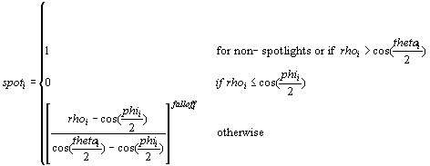

The diffuse and specular lighting components of the global illumination equation contain terms that describe light attenuation and the spotlight cone. These terms are described below.
The attenuation of a light depends on the type of light and the distance between the light and the vertex position. To calculate attenuation, use one of the following equations.
Atten = 1/( att0i + att1i * d + att2i * d²)
Where:
| Parameter | Default value | Type | Description | Range |
|---|---|---|---|---|
| att0i | 0.0 | FLOAT | Constant attenuation factor | 0 to +infinity |
| att1i | 0.0 | FLOAT | Linear attenuation factor | 0 to +infinity |
| att2i | 0.0 | FLOAT | Quadratic attenuation factor | 0 to +infinity |
| d | N/A | FLOAT | Distance from vertex position to light position | N/A |
Â
The att0, att1, att2 values are specified by the Attenuation0, Attenuation1, and Attenuation2 members of D3DLIGHT9.
The distance between the light and the vertex position is always positive.
d = | Ldir |
Where:
| Parameter | Default value | Type | Description |
|---|---|---|---|
| Ldir | N/A | D3DVECTOR | Direction vector from vertex position to the light position |
Â
If d is greater than the light's range, that is, the Range member of a D3DLIGHT9 structure, Direct3D makes no further attenuation calculations and applies no effects from the light to the vertex.
The attenuation constants act as coefficients in the formula - you can produce a variety of attenuation curves by making simple adjustments to them. You can set Attenuation1 to 1.0 to create a light that doesn't attenuate but is still limited by range, or you can experiment with different values to achieve various attenuation effects.
The attenuation at the maximum range of the light is not 0.0. To prevent lights from suddenly appearing when they are at the light range, an application can increase the light range. Or, the application can set up attenuation constants so that the attenuation factor is close to 0.0 at the light range. The attenuation value is multiplied by the red, green, and blue components of the light's color to scale the light's intensity as a factor of the distance light travels to a vertex.
The following equation specifies the spotlight factor.

| Parameter | Default value | Type | Description | Range |
|---|---|---|---|---|
| rhoi | N/A | FLOAT | cosine(angle) for spotlight i | N/A |
| phii | 0.0 | FLOAT | Penumbra angle of spotlight i in radians | [thetai, pi) |
| thetai | 0.0 | FLOAT | Umbra angle of spotlight i in radians | [0, pi) |
| falloff | 0.0 | FLOAT | Falloff factor | (-infinity, +infinity) |
Â
Where:
rho = norm(Ldcs).norm(Ldir)
and:
| Parameter | Default value | Type | Description |
|---|---|---|---|
| Ldcs | N/A | D3DVECTOR | The negative of the light direction in camera space |
| Ldir | N/A | D3DVECTOR | Direction vector from vertex position to the light position |
Â
After computing the light attenuation, Direct3D also considers spotlight effects if applicable, the angle that the light reflects from a surface, and the reflectance of the current material to calculate the diffuse and specular components for that vertex. For more information, see SpotLight.
Â
Â